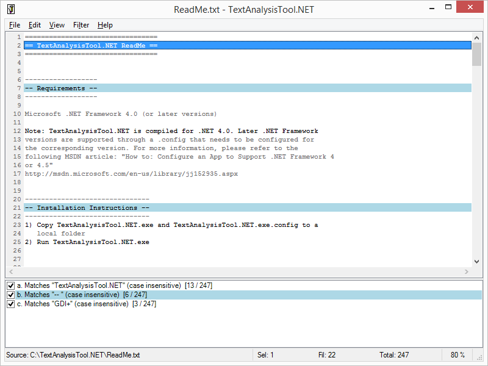
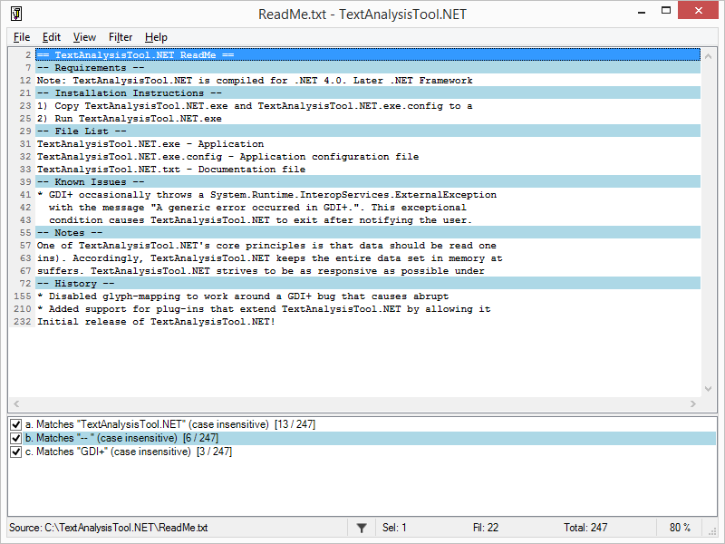
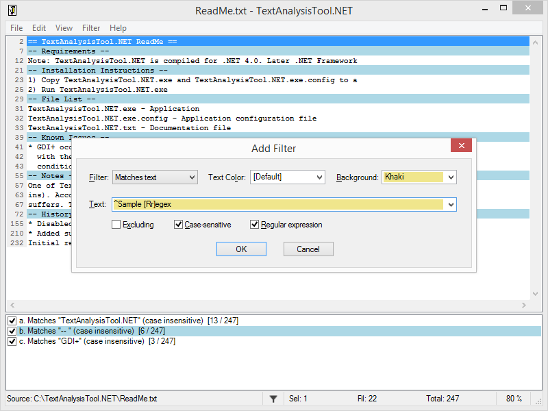
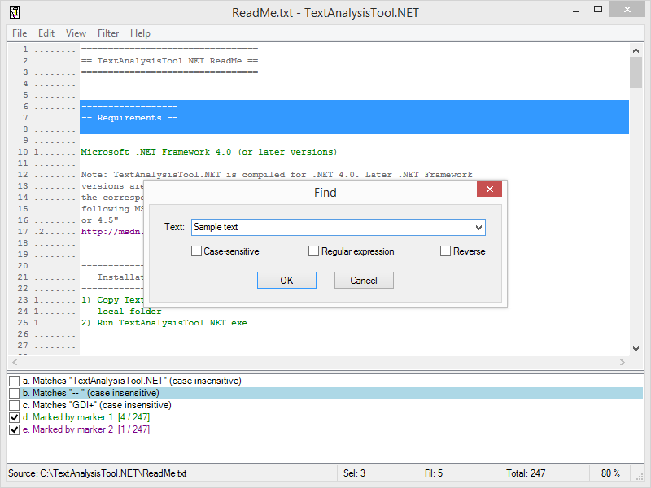

David Anson
Mike Morante
Uriel Cohen
Vince Curley
Aleksey Kabanov
Jenny Leung
TextAnalysisTool.NET is a free program designed to excel at viewing, searching, and navigating large files quickly and efficiently. TextAnalysisTool.NET provides a view of the data that you can easily manipulate (through the use of various filters) to display exactly the information you need - as you need it!
   2023-04-25 for .NET 4.8+ (32- and 64-bit)2020-12-17 for .NET 4+ (32- and 64-bit)2013-05-07 for .NET 2+ (32- and 64-bit)2006-12-04 for .NET 1.1+ (32-bit only)2001-12-28 for x86 (32-bit only)The Problem: For those times when you have to analyze a large amount of textual data, picking out the relevant line(s) of interest can be quite difficult. Standard text editors usually provide a generic "find" function, but the limitations of that simple approach quickly become apparent (e.g., when it is necessary to compare two or more widely separated lines). Some more sophisticated editors do better by allowing you to "bookmark" lines of interest; this can be a big help, but is often not enough.
The Solution: TextAnalysisTool.NET - a program designed from the start to excel at viewing, searching, and navigating large files quickly and efficiently. TextAnalysisTool.NET provides a view of the file that you can easily manipulate (through the use of various filters) to display exactly the information you need - as you need it.
Filters: Before displaying the lines of a file, TextAnalysisTool.NET passes the lines of that file through a set of user-defined filters, dimming or hiding all lines that do not satisfy any of the filters. Filters can select only the lines that contain a sub-string, those that have been marked with a particular marker type, or those that match a regular expression. Text and background colors can be associated with each filter so that lines matching a particular filter stand out and lines matching different filters can be easily distinguished. In addition to the normal "including" filters that isolate lines of text you DO want to see, there are also "excluding" filters that can be used to suppress lines you do NOT want to see. Excluding filters are configured just like including filters but are processed afterward and remove all matching lines from the set. Excluding filters allow you to easily refine your search even further.
Markers: Markers are another way that TextAnalysisTool.NET makes it easy to navigate a file; you can mark any line with one or more of eight different marker types. Once lines have been marked, you can quickly navigate between similarly marked lines - or add a "marked by" filter to view only those lines.
Find: TextAnalysisTool.NET also provides a flexible "find" function that allows you to search for text anywhere within a file. This text can be a literal string or a regular expression, so it's easy to find a specific line. If you decide to turn a find string into a filter, the history feature of both dialogs makes it easy.
Summary: TextAnalysisTool.NET was written with speed and ease of use in mind throughout. It saves you time by allowing you to save and load filter sets; it lets you import text by opening a file, dragging-and-dropping a file or text from another application, or by pasting text from the clipboard; and it allows you to share the results of your filters by copying lines to the clipboard or by saving the current lines to a file. TextAnalysisTool.NET supports files encoded with ANSI, UTF-8, Unicode, and big-endian Unicode and is designed to handle large files efficiently.